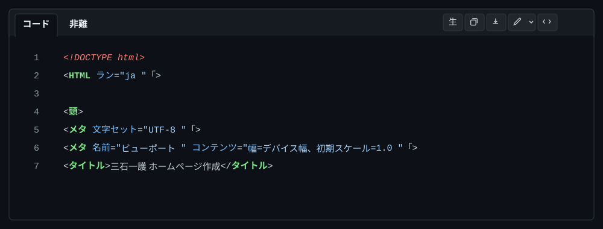

githubのファイルを修正 の手順
以下の手順で GitHubのファイルを修正します。
1. GitHub に登録したリポジトリを開きます
ファイルを修正するには「ファイル名」をクリックします。

ファイル名をクリックすると、codeが表示されます。

右上の鉛筆のアイコンをクリックします。
包装なし(No wrap)でコードが表示されます。編集できます。
編集すると
変更をキャンセルする
変更をコミットする
と表示されますのでどちらかをクリックします。